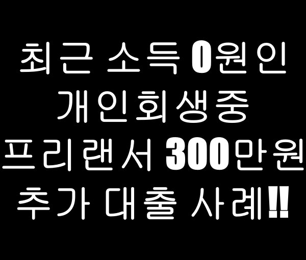
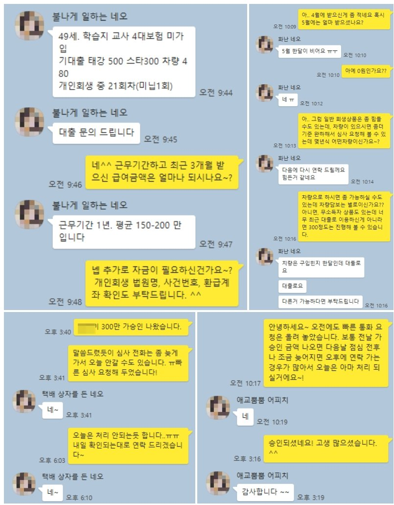

최근 소득 0원인 개인회생중 프리랜서 300만원 추가 대출 사례!!

안녕하세요~ 뱅크앤론 임용현부장입니다. ^^
오늘은 개인회생 진행중에 최근 소득이 거의 없으신 분의 대출 사례를 소개해 드리겠습니다.
문의 주신 고객님은 학습지 교사로 근무 중이셨으며, 근무기간 1년에 평균 소득은 150~200만원 정도 였습니다.
개인회생 진행 상황은 36회중 21회 납부 중이셨고 미납은 1회, 월변제금액은 38만원정도 되었습니다.
기존 이용중인 대출은 태강500, 스타300, 웰컴오토480 으로 아주 많은 채무를 이용하고 있지는 않았지만, 최근 개인사정으로 일을 많이 하지 못해 급여가 많지 않고 가장 최근 소득은 0원이었습니다.
차량이 있으신듯 하여 차량대출로 안내해 드리려고 하였으나, 최근 구매에 전액 할부로 구매 하셨다 하여 진행 원치 않으셔서 개인회생중에 가능한 무소득자 상품으로 안내해 드렸습니다.
무소득자 상품의 경우 대출건수가 3건이상에, 1000만원 넘게 이용중이면 진행이 쉽지 않으나, 최근 가장 높은 승인율으 보이고 있는 금융사로 안내해 드렸고, 그 결과 추가 생활자금 300만원 대출을 받으실 수 있었습니다.
어려운 상황에 필요하신 대출금을 받으실 수 있어서 고객님도 매우 만족해 하셨습니다.
아래는 해당 고객님과 실제 상담한 카톡 내용을 올려 드리오니 참고하시어 많은 도움 되셨으면 좋겠습니다. 감사합니다. ^^
